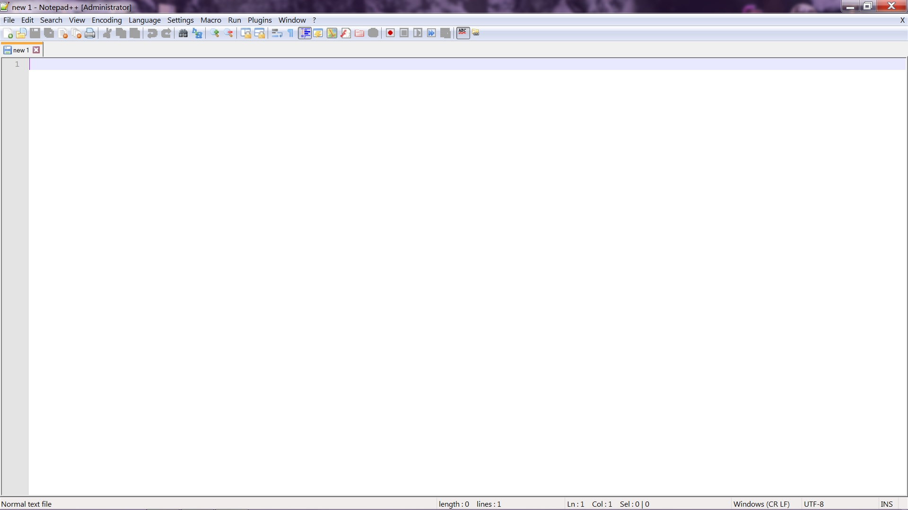

A new page on notepad++Notepad++ after you drag a folder into the program
Open Github Desktop
Sign in using the email or username and password for Github
Configure the Github Desktop if needed
Click the Add button and click clone
Clone the project and save it to the desktop
Create a new branch by clicking the new branch button to use to edit
Change the branch from master to your branch
Edit the files in Notepad++
Click the change button
Add a summary and description of the changes and click the commit button
Merge the commits from your branch to the master
Sync the project to the remote by clicking the sync button
Github loginClone a repository from GithubCreate a new branch in githubShows the history of commits for the repositoryChanges page of Github where you commit your work